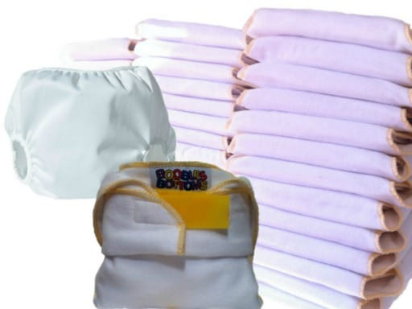

I think we can all agree that using cloth diapers is more work than disposables.
AND if that's not bad enough...
cloth diapering means you'll be touching baby poop on the daily... ugh
You might be wondering WHY anyone would choose cloth over disposables?
My Top 5 Reasons You Should Choose Cloth
1. Cloth Diapers Save You MONEY
How much? Anywhere from $2,000 - $3,000 per baby depending on: the type you buy, whether or not you use resuable wipes and how many diapers you have
2. Earlier Potty Training
The average age a toddler potty trains is now around 3. That's 3 years of changing shitty diapers. With cloth you can easily take a year off of that average and you can even cut it in half! With cloth diapers 18 months is a very realistic age for a child to be out of diapers.
WARNING the type of cloth diapers makes a difference. Pocket style cloth diapers that mimic disposables by wicking moisture will make early potty training more difficult
3. More Natural/NO Cancer Causing Chemicals
Disposable diaper using parents don't like to think about the fact that their babies are wearing something 24/7 for 3 years that contains known cancer causing chemicals...
4. Better For The Earth
By using the right cloth diapers, having enough that you're not laundering daily and potty training early you're doing the earth a favor.
NOT SO FUN FACT: disposable diapers take over 500 years to decompose
5. You Look Like Some Kind Of Modern Hippie/50's Housewife Hybrid
In these modern times where most parents can't comprehend going with anything but the easiest option; you look like a real Super Mom when you choose and succeed at using cloth diapers
My Top 5 Tips For Cloth Diaper SUCCESS
1. Buy Enough Diapers
36. The more diapers you have the easier it is. I cannot stress this enough.
Most sites recommend 24, but with 24 you're washing every other day, sometimes every day in the beginning. With 36 it's every 2-3 days in the beginning and less frequent as they get older.
If you are constantly running out of diapers it will be very tempting to start supplementing with disposables.
2. Buy Diapers That Are Simple to Wash
The easiest diapers to wash and the most durable are ones that are 100% cotton, hemp or bamboo and have a detached cover.
This means you can: wash them using your regular detergent (half the amount), wash in hot water and quickly dry using high heat (things you can't do with pocket diapers). Covers can be quickly rinsed off or soaped up in the bathroom sink and left to air dry
Bulky all in one diapers are harder to rinse poop out of and can be annoying to stuff and unstuff. A detached liner or absorbency pad makes for the easiest poop clean up.
3. Buy Diapers That Are Easy to Use
This means: easy to size AND easy to put on and take off.
Diapers with velcro closures are the easiest to take on and off of a squirming baby. Snaps are a pain to line up, are harder to take off and can fall off. Pins are by far the worst fastening option
4. Buy The Diapers BEFORE Your Baby Arrives
Commit to using cloth, make the decision now and have everything ready before your baby gets here.
Pick a cloth diaper start date and stick to it. A lot of parents use disposables the first few weeks but this can be a slippery slope that leads to many parents never using the cloth diapers because they are afraid to add more work onto their already sometimes overwhelming to-do list.
5. Tell Eveyone You're Cloth Diapering
Again, you want to do this before your baby is born. Tell your friends and family, post pics of your new diapers on facebook or instagram.
The point is that you will be much more likely to stick with your decision to use cloth if you've already had to defend your choice and will face ridicule if you fail.
Most Common Reasons For Failure
1. Not enough diapers. Again, this is a big one. The more diapers you have the easier it is
2. Used disposables too long and didn't switch to cloth. Start early.
3. Supplemented with disposables more and more until cloth was phased out. Don't fall into bad habits.
4. Was never fully committed because the reasons for using cloth weren't compelling enough.
5. Bought the wrong diapers. Usually the "fancy" ones that had more complicated washing instructions. And/or diapers that were difficult to clean poop out of.
The Solution...
The BB Complete 36 diaper cloth diapering system.... or something similar
 The trimmest fitting one size diapers.
Allow your baby to feel moisure which will speed up early potty training.
Have the simplest washing instructions
Are super durable.
Detached pads for easy clean up.
Velcro closures for quick and easy changes
Everything you need from birth to potty is in one affordable kit. Diapers, Covers & Wipes.